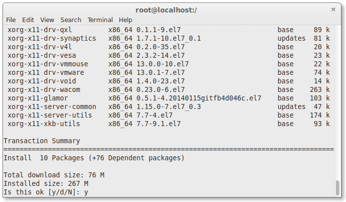
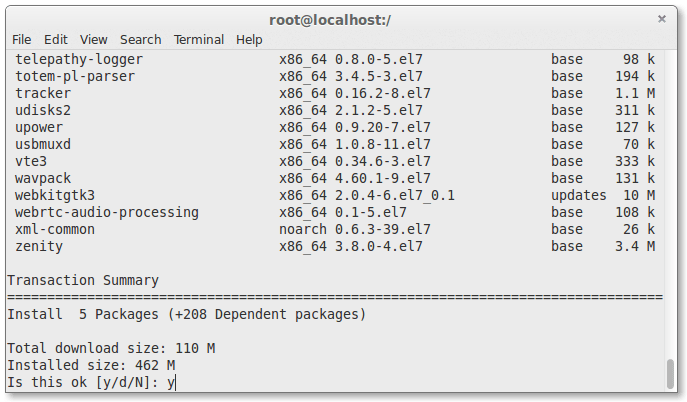
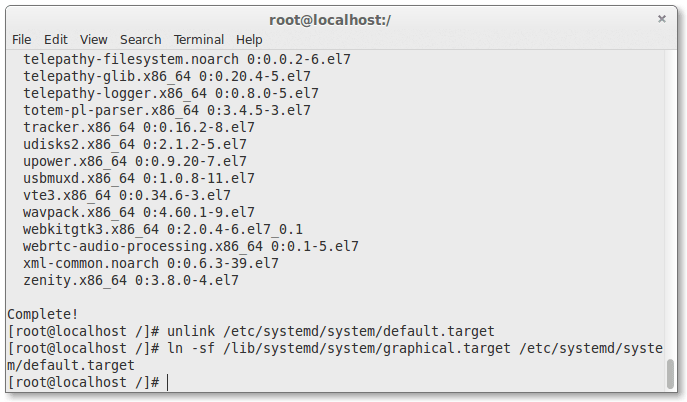
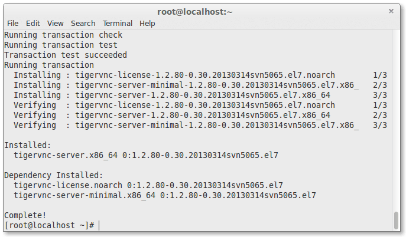
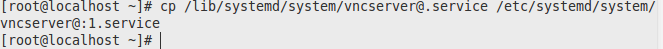
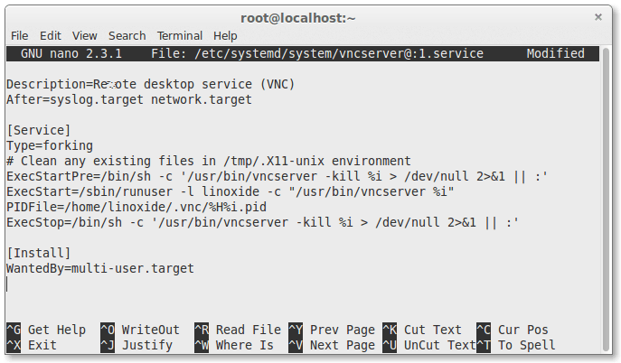
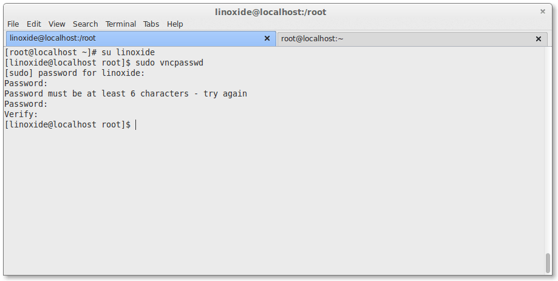
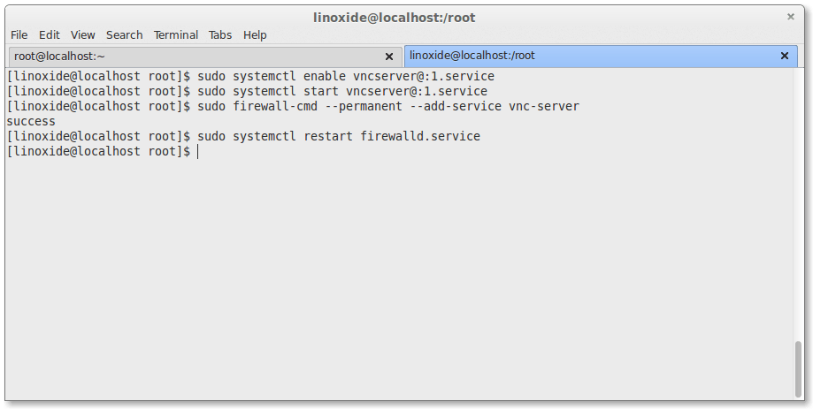
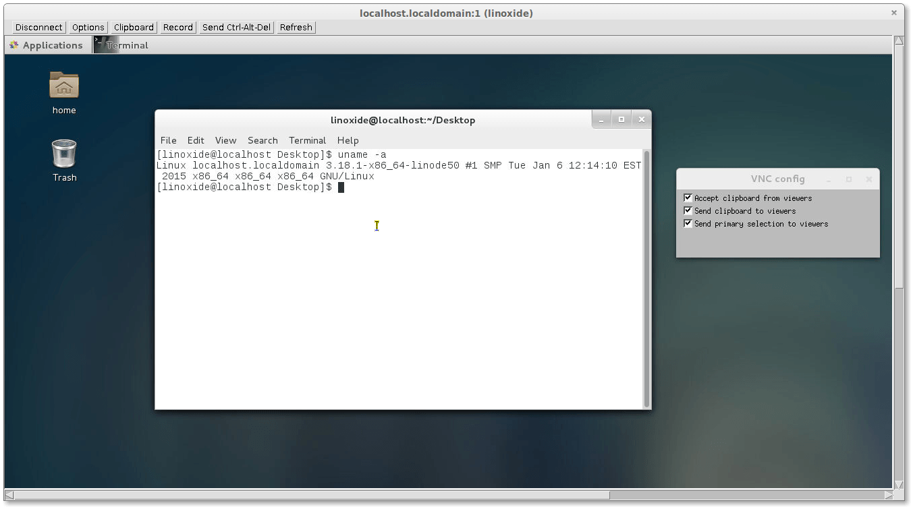

怎样在 CentOS 7.0 上安装和配置 VNC 服务器
编译自：http://linoxide.com/linux-how-to/install-configure-vnc-server-centos-7-0/
作者： Arun Pyasi
原创：LCTT https://linux.cn/article-5335-1.html
译者： boredivan
本文地址：https://linux.cn/article-5335-1.html
这是一个关于怎样在你的 CentOS 7 上安装配置 VNC 服务的教程。当然这个教程也适合 RHEL 7 。在这个教程里，我们将学习什么是 VNC 以及怎样在 CentOS 7 上安装配置 VNC 服务器。
我们都知道，作为一个系统管理员，大多数时间是通过网络管理服务器的。在管理服务器的过程中很少会用到图形界面，多数情况下我们只是用 SSH 来完成我们的管理任务。在这篇文章里，我们将配置 VNC 来提供一个连接我们 CentOS 7 服务器的方法。VNC 允许我们开启一个远程图形会话来连接我们的服务器，这样我们就可以通过网络远程访问服务器的图形界面了。
VNC 服务器是一个自由开源软件，它可以让用户可以远程访问服务器的桌面环境。另外连接 VNC 服务器需要使用 VNC viewer 这个客户端。
一些 VNC 服务器的优点：
- 远程的图形管理方式让工作变得简单方便。
- 剪贴板可以在 CentOS 服务器主机和 VNC 客户端机器之间共享。
- CentOS 服务器上也可以安装图形工具，让管理能力变得更强大。
- 只要安装了 VNC 客户端，通过任何操作系统都可以管理 CentOS 服务器了。
- 比 ssh 图形转发和 RDP 连接更可靠。
那么，让我们开始安装 VNC 服务器之旅吧。我们需要按照下面的步骤一步一步来搭建一个可用的 VNC。
首先，我们需要一个可用的桌面环境（X-Window），如果没有的话要先安装一个。
注意：以下命令必须以 root 权限运行。要切换到 root ，请在终端下运行“sudo -s”，当然不包括双引号（“”）
1. 安装 X-Window
首先我们需要安装 X-Window，在终端中运行下面的命令，安装会花费一点时间。
# yum check-update# yum groupinstall "X Window System"

installing x windows
#yum install gnome-classic-session gnome-terminal nautilus-open-terminal control-center liberation-mono-fonts

install gnome classic session
### 设置默认启动图形界面# unlink /etc/systemd/system/default.target# ln -sf /lib/systemd/system/graphical.target /etc/systemd/system/default.target

configuring graphics
# reboot
在服务器重启之后，我们就有了一个工作着的 CentOS 7 桌面环境了。
现在，我们要在服务器上安装 VNC 服务器了。
2. 安装 VNC 服务器
现在要在我们的 CentOS 7 上安装 VNC 服务器了。我们需要执行下面的命令。
# yum install tigervnc-server -y

vnc server
3. 配置 VNC
然后，我们需要在 /etc/systemd/system/ 目录里创建一个配置文件。我们可以将 /lib/systemd/sytem/vncserver@.service 拷贝一份配置文件范例过来。
# cp /lib/systemd/system/vncserver@.service /etc/systemd/system/vncserver@:1.service

copying vnc server configuration
接着我们用自己最喜欢的编辑器（这儿我们用的 nano ）打开 /etc/systemd/system/vncserver@:1.service ，找到下面这几行，用自己的用户名替换掉 。举例来说，我的用户名是 linoxide 所以我用 linoxide 来替换掉 ：
ExecStart=/sbin/runuser -l <USER> -c "/usr/bin/vncserver %i"PIDFile=/home/<USER>/.vnc/%H%i.pid
替换成
ExecStart=/sbin/runuser -l linoxide -c "/usr/bin/vncserver %i"PIDFile=/home/linoxide/.vnc/%H%i.pid
如果是 root 用户则
ExecStart=/sbin/runuser -l root -c "/usr/bin/vncserver %i"PIDFile=/root/.vnc/%H%i.pid

configuring user
好了，下面重启 systemd 。
# systemctl daemon-reload
最后还要设置一下用户的 VNC 密码。要设置某个用户的密码，必须要有能通过 sudo 切换到用户的权限，这里我用 linoxide 的权限，执行“su linoxide”就可以了。
# su linoxide$ sudo vncpasswd

setting vnc password
确保你输入的密码多于6个字符
4. 开启服务
用下面的命令（永久地）开启服务：
$ sudo systemctl enable vncserver@:1.service
启动服务。
$ sudo systemctl start vncserver@:1.service
5. 防火墙设置
我们需要配置防火墙来让 VNC 服务正常工作。
$ sudo firewall-cmd --permanent --add-service vnc-server$ sudo systemctl restart firewalld.service

allowing firewalld
现在就可以用 IP 和端口号（LCTT 译注：例如 192.168.1.1:1 ，这里的端口不是服务器的端口，而是视 VNC 连接数的多少从1开始排序）来连接 VNC 服务器了。
6. 用 VNC 客户端连接服务器
好了，现在已经完成了 VNC 服务器的安装了。要使用 VNC 连接服务器，我们还需要一个在本地计算机上安装的仅供连接远程计算机使用的 VNC 客户端。

remote access vncserver from vncviewer
你可以用像 Tightvnc viewer 和 Realvnc viewer 的客户端来连接到服务器。
要用更多的用户连接，需要创建配置文件和端口，请回到第3步，添加一个新的用户和端口。你需要创建 vncserver@:2.service 并替换配置文件里的用户名和之后步骤里相应的文件名、端口号。请确保你登录 VNC 服务器用的是你之前配置 VNC 密码的时候使用的那个用户名。
VNC 服务本身使用的是5900端口。鉴于有不同的用户使用 VNC ，每个人的连接都会获得不同的端口。配置文件名里面的数字告诉 VNC 服务器把服务运行在5900的子端口上。在我们这个例子里，第一个 VNC 服务会运行在5901（5900 + 1）端口上，之后的依次增加，运行在5900 + x 号端口上。其中 x 是指之后用户的配置文件名 vncserver@:x.service 里面的 x 。
在建立连接之前，我们需要知道服务器的 IP 地址和端口。IP 地址是一台计算机在网络中的独特的识别号码。我的服务器的 IP 地址是96.126.120.92，VNC 用户端口是1。
执行下面的命令可以获得服务器的公网 IP 地址（LCTT 译注：如果你的服务器放在内网或使用动态地址的话，可以这样获得其公网 IP 地址）。
# curl -s checkip.dyndns.org|sed -e 's/.*Current IP Address: //' -e 's/<.*$//'
总结
好了，现在我们已经在运行 CentOS 7 / RHEL 7 的服务器上安装配置好了 VNC 服务器。VNC 是自由开源软件中最简单的一种能实现远程控制服务器的工具，也是一款优秀的 Teamviewer Remote Access 替代品。VNC 允许一个安装了 VNC 客户端的用户远程控制一台安装了 VNC 服务的服务器。下面还有一些经常使用的相关命令。好好玩！
其他命令：
-
关闭 VNC 服务。
# systemctl stop vncserver@:1.service
-
禁止 VNC 服务开机启动。
# systemctl disable vncserver@:1.service
-
关闭防火墙。
# systemctl stop firewalld.service
via: http://linoxide.com/linux-how-to/install-configure-vnc-server-centos-7-0/
作者：Arun Pyasi 译者：boredivan 校对：wxy

%20);){kind=link}
%20);){kind=link}